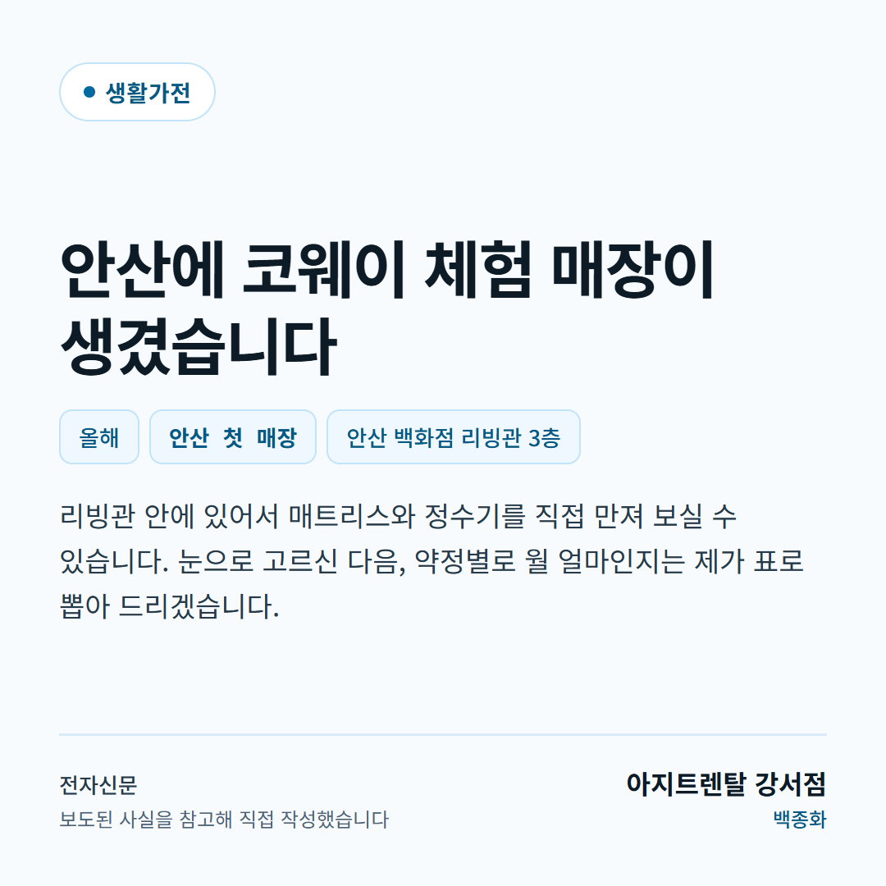
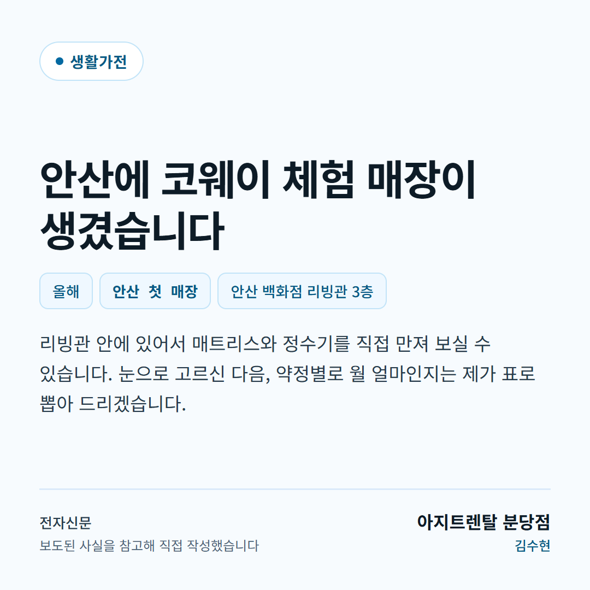
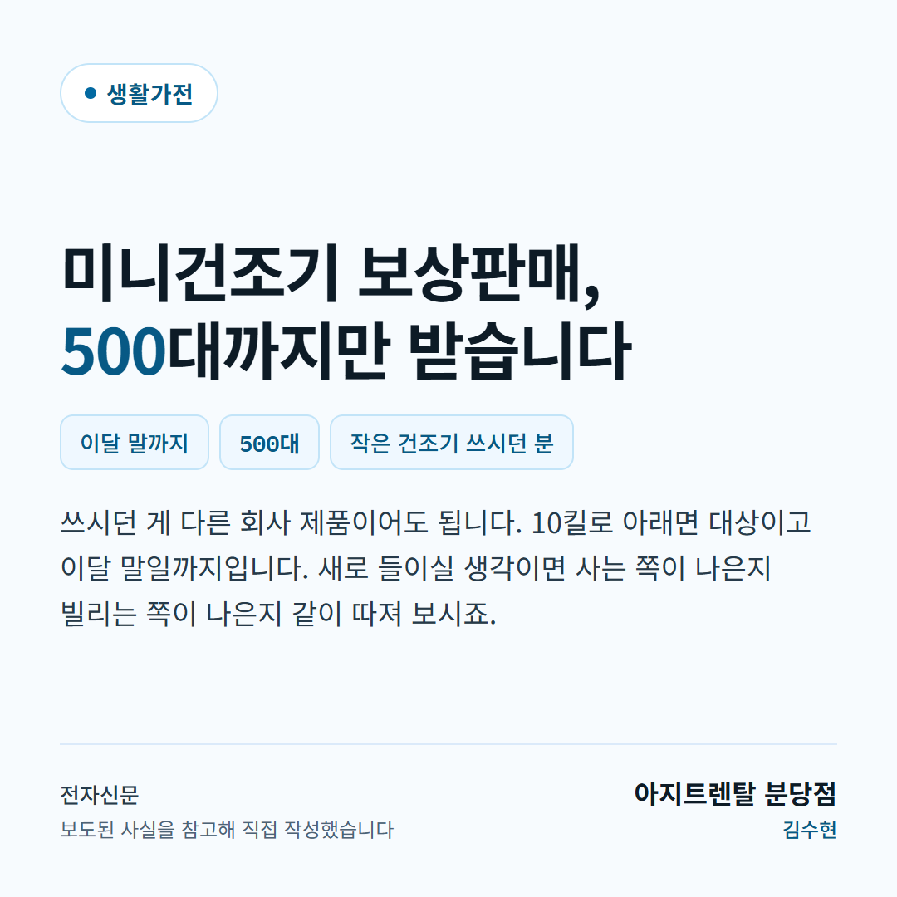
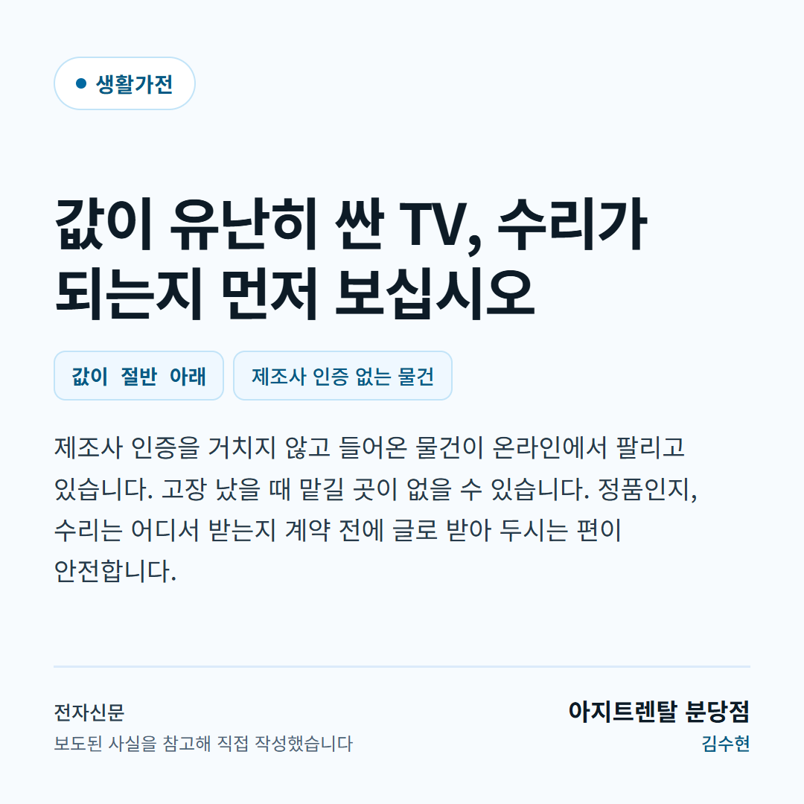

다뿌려 — 뉴스에서 사실만 뽑아 총판별 SNS 카드로 만드는 자동화 · 동작 시안
누구세오랩 · 2026-09-10
소재 3건 × 이용 중 총판 2곳 = 6장. 총판마다 상호와 연락처가 들어갑니다.




| 매체 | 제목 | 카드 문구 |
|---|---|---|
| 전자신문 | 롯데백화점 안산점에 '코웨이갤러리' 오픈…오프라인 체험 접점 확대 | 안산에 코웨이 체험 매장이 생겼습니다 리빙관 안에 있어서 매트리스와 정수기를 직접 만져 보실 수 있습니다. 눈으로 고르신 다음, 약정별로 월 얼마인지는 제가 표로 뽑아 드리겠습니다. |
| 전자신문 | 미닉스, 브랜드 최초 미니건조기 보상판매 실시 | 미니건조기 보상판매, 500대까지만 받습니다 쓰시던 게 다른 회사 제품이어도 됩니다. 10킬로 아래면 대상이고 이달 말일까지입니다. 새로 들이실 생각이면 사는 쪽이 나은지 빌리는 쪽이 나은지 같이 따져 보시죠. |
| 전자신문 | 삼성전자·LG전자 TV 리퍼로 역수입…반값 유통에 브랜드·AS 사각지대 | 값이 유난히 싼 TV, 수리가 되는지 먼저 보십시오 제조사 인증을 거치지 않고 들어온 물건이 온라인에서 팔리고 있습니다. 고장 났을 때 맡길 곳이 없을 수 있습니다. 정품인지, 수리는 어디서 받는지 계약 전에 글로 받아 두시는 편이 안전합니다. |
🔴 켜는 조건 넷을 다 만족해야 합니다 — robots 허용 · 약관 확인 · 비회원 금지 아님 · 공개 RSS 존재.
| 매체 | 이유 | |
|---|---|---|
| 켬 | 전자신문 | 가전·렌탈 품목을 가장 많이 다룬다 |
| 켬 | 지디넷코리아 | IT·가전 전문지라 생활가전 소재 밀도가 높다 |
| 켬 | 컨슈머타임스 | 소비자 전문지 — 전자신문 단일 의존을 피하는 이중화 |
| 끔 | 소비자가만드는신문 | robots 가 `/rss/` 를 막는다. 기사 경로는 열려 있지만 **우리는 공개 RSS 만 읽는다**(POLICY). 기사 목록을 긁어 우회하는 것은 robo… |
| 끔 | 디지털데일리 | robots 는 열려 있지만 약관이 **주어를 회원으로 한정하지 않고** 「데이터베이스를 비롯한 각종 정보서비스 등에 사용」을 금지하며 「비영리 목적이라도」라고 … |
| 끔 | 한국경제 | robots 는 열려 있으나 **약관이 두 겹으로 막는다.** ① 제19조① 이 자동수집을 명시 금지하고 ② 제21조④ 는 주어가 「이용자」라 「우리는 회원이 아… |
| 끔 | 연합뉴스 | **AI 크롤러 23종을 이름으로 막아 뒀다** — GPTBot·ClaudeBot·anthropic-ai 포함. 우리 파이프라인은 본문을 LLM 에 넘긴다. 이름… |
| 끔 | 매일경제 | AI 크롤러 13종 차단(GPTBot·ClaudeBot·anthropic-ai 포함). POLICY.no-ai-evade.… |
| 끔 | 이데일리 | ⚠️ GPTBot·ClaudeBot 은 안 막았지만 **bytespider·diffbot 같은 수집형 AI 봇을 막았다.** 우리 규칙(no-ai-evade)은 … |
| 끔 | 네이버 뉴스 검색 API | API 는 **키를 발급받아야 하고 그건 회원 계약이다.** 「회원이 아니다」라는 우리 논리가 여기서는 성립하지 않는다. POLICY.dont 의 no-apike… |
| 끔 | 한국언론진흥재단 (빅카인즈) | 이용계약이 전제인데 **계약하지 않기로 결정**했다(POLICY). 계약 없이 쓰지 않는다.… |